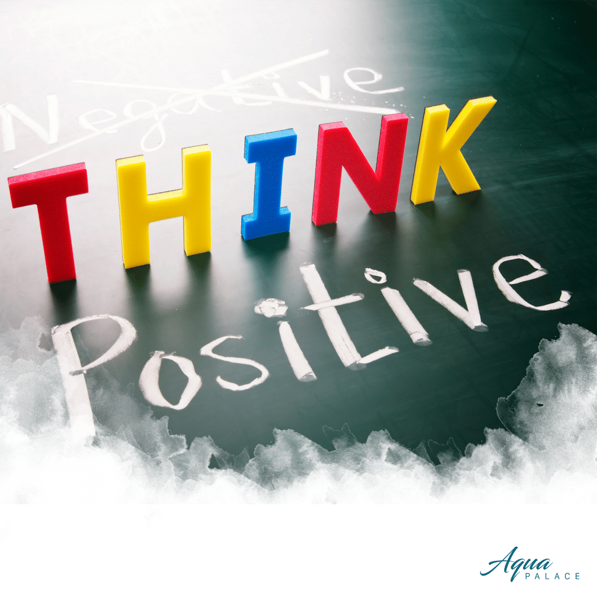

Hi, I'm Dat Duong
Student/ Photographer/ Blogger
Welcome to my Blog!!!
Hi, I'm Dat Duong
Student/ Photographer/ Blogger
Welcome to my Blog!!!


MỤC ĐÍCH CỦA CUỘC ĐỜI BẠN

2019 đến rồi, bạn đã lên kế hoạch cho năm mới chưa? Và để có một kế hoạch hoàn chỉnh thì phải có mục đích đúng không nào? Mục đích năm sau của bạn là gì? Thăng tiến trong công việc, kiếm thật nhiều tiền, đi du lịch thật nhiều hơn, có một gia đình nhỏ … và rồi đâu mới chính là mục đích lớn nhất của cuộc đời bạn theo đuổi? Hạnh phúc chắc hẳn là mục đích duy nhất của rất nhiều người nhưng làm sao để có được nó. Tìm kiếm được hạnh phúc của mình là một chặng đường dài mà ở đó bạn cần phải nổ lực rất nhiều.
Bản thân bạn chính là cốt lõi của mọi vấn đề, phải không? Năm mới, hành trình mới chúng ta lại tiếp tục hoàn thiện và phát triển bản thân mình nhưng không có nghĩa là ép mình thay đổi quá nhiều cùng một lúc. Đầu tiên, hãy ngồi xuông viết ra những ưu điểm, nhược điểm, những điều mà bạn muốn thay đổi. Và cuối cùng là từng ngày từng ngày theo dõi hành trình của bản thân. Chặng đường này sẽ gặp không ít khó khăn và đôi khi bạn muốn bỏ cuộc nhưng nếu chúng ta có suy nghĩ tích cực, làm chủ cảm xúc của mình thì bạn chắc chắn sẽ thành công.
Suy nghĩ tích cực ở mỗi tình huống: Tiêu cực và tích cực luôn tồn tại song song, suy nghĩ về chúng sẽ giúp bạn chọn đúng đường để tiến gần hơn tới hạnh phúc. Hãy nhìn vào các khía cạnh của tình huống, xác định cách mà bạn nhìn nhận vấn đề và thay đổi góc nhìn của bản thân mỗi ngày sẽ trở nên mạnh mẽ hơn và hình thành khả năng chịu đựng về mặt cảm xúc. Làm chủ cảm xúc của mình: Bất cứ ai cũng sẽ có những cảm giác đau khổ: tức giận, sợ hãi, lo lắng, căng thẳng và đau buồn kể cả những con người hạnh phúc nhất đôi khi cũng cảm thấy buồn. Vì vậy, chúng ta cũng cần được bày tỏ cảm xúc? Bởi khi kìm nén cảm xúc quá lâu chúng có thể bùng phát theo chiều hướng tiêu cực (chẳng hạn như tức giận và bạo lực). Tuy nhiên, giải tỏa một chút theo những cách lành mạnh như tập đấm bốc khi cảm thấy tức giận có thể giúp bạn cân bằng cảm xúc trong một thời gian dài.
Nếu bạn luôn suy nghĩ tích cực và làm chủ được cảm xúc của mình thì Aqua Palace tin rằng bạn sẽ thành công trong công việc cũng như cuộc sống. Và cuộc sống xung quanh luôn có rất nhiều thứ để bạn trải nghiệm như mở rộng những mối quan hệ có thể giúp bạn khám phá ra nhiều điều thú vị xung quanh hay học một môn nghệ thuật khác, du lịch tới vùng đất mới, thử làm những điều mình sợ … Sẵn sàng đón nhận trải nghiệm mới giúp bạn tập trung vào sự phát triển cá nhân. Và khi mà bạn tự tin với chính mình thì bạn mới có thể sẵn sàng yêu thương những người bên cạnh mình. Và Aristotle từng nói: “Hạnh phúc là ý nghĩa và mục đích của cuộc sống, toàn bộ mục tiêu và cái kết cho sự tồn tại của con người”. Vậy thì có phải điều cuối cùng bạn theo đuổi là hạnh phúc không?
Và làm thế nào để hạnh phúc? Để có được hạnh phúc chúng ta cần biết cách cho đi, học cách yêu thương gia đình, bạn bè, đồng nghiệp và cũng đừng quên mang hạnh phúc đến cho chính mình bằng những thú vui giải trí cùng mọi người xung quanh nhiều hơn. Và hơn ai hết đó chính là đối phương, người bạn yêu, bạn có muốn tạo dựng một hạnh phúc với họ không? Năm mới rồi, bạn đã có dự định nào cho cả hai chưa? Có bộ phim, cuốn sách hay một nơi nào đó bạn muốn đi cùng người ấy? Hay một cái kết đẹp cho cả hai trong năm nay. Hãy cùng nhau liệt kê những điều mà các bạn muốn làm cùng nhau, những mục tiêu mà bạn muốn đặt được. Bởi tình yêu là một thứ gì đó rất mong manh và cần gìn giữ mỗi ngày và Aqua Palace biết rằng ai trong chúng ta cuối cùng cũng khao khát có một cuộc sống hạnh phúc với người mà ta yêu thương..
Mình là Đạt Dương, năm nay mình đã ngoài 20 tuổi. Hiện tại mình đang là sinh viên Cao đẳng FPT Polytechnic. Mình tạo ra Blog này không có mục đích gì cả, đơn giản là vì mình thích. À không, nó là bài Asigment của mình!!!! Cảm ơn các bạn đã ghé ngang qua đây. Mãi yêu!

© Hellcat.2107
© Đạt Dương 2020
Liên hệ: 0365330465
Email: duongdat05@gmail.com